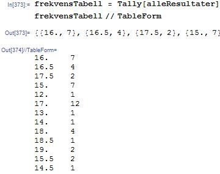

2.1 Kumulative data, tabeller, og diagrammer
Her tar vi utganspunkt i dataen vi har hentet fra en excell fil (se forrige kapitell). Dataen vi jobber med i dette eksemplet er gitt navnet "s"
Dataen består av en tabell men en liste over lengden man kan strekke forskjellige seigmenn før de ryker (resultat). Første rad i tabellen beskriver farge
Hente ut spesifikk kollonne/rad fra tabell
data[[rad, kolonne] (returnerer valgt rad og kolonne)
Rest@ data fjerner første rad
Rest/@ data fjerner første kolonne
Slå sammen kolonner (legge kolonner under hverandre)
Fjerne elementer fra liste
Dersom man sitter med en liste med enkelte tomme verdier, eller verdier man ønsker å fjerne. F.Eks "N/A", kan det lett gjøres slik:
Frekvenstabell:
Her er hvordan du lager en tabell som viser antall tilfeller av hver måling. Første kolonne er måling/resultat, andre kolonne er antall/frekvens

Merk at denne tabellen er usortert, se lenger ned på siden for hvordan du kan sortere innholdet i tabeller.
Kumulativ frekvenstabell:
For å vise kumulativt antall bruker vi funksjonen Accumulate[data (antall tilfeller)].
Siden det er antall tilfeller vi ønsker å akumulere må vi hente ut daten fra andre kollonne i frekvenstabellen:
Legge til kolonne i tabell:
Generere og sortere tabeller
Vertikal liste:
Horisontal liste:
Gjøre om fra horisontal til vertikal liste og motsatt:
Horisontal og vertikal liste slått sammen:
For å sortere innholdet i tabeller kan man bruke funksjonen
SortBy[liste, #[[kolonne]]&]
For å vise som tabell kan du skrive data //TableForm
Generere diagrammer:
Stolpediagram: